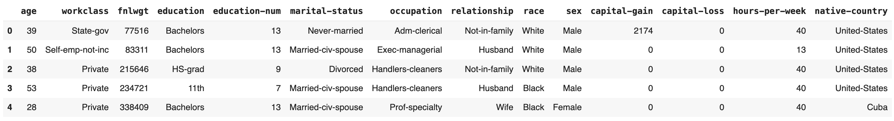
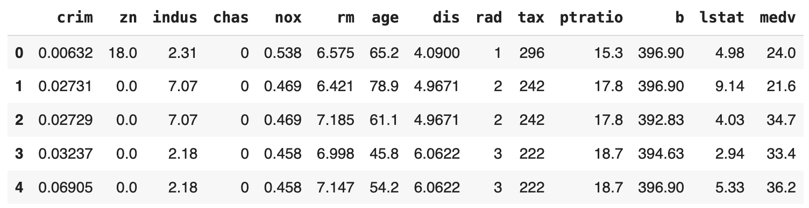
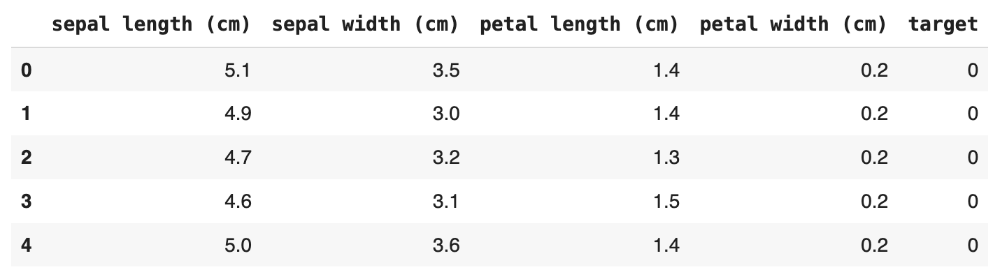
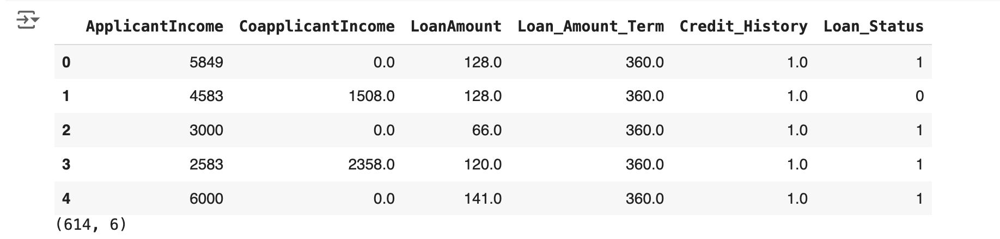

XPER.datasets package
XPER.datasets.load_data module
- XPER.datasets.load_data. adult() [source]
-
Load and return the UCI Adult dataset (classification).
This dataset contains census data on individuals from the U.S. and is often used for binary classification tasks to predict whether an individual's income exceeds $50,000 per year.
Returns:
pandas.DataFrame: A DataFrame containing the dataset with the following features:- age: Age of the individual.
- workclass: Work class of the individual.
- fnlwgt: Final weight.
- education: Education level.
- education-num: Number of years of education.
- marital-status: Marital status.
- occupation: Occupation of the individual.
- relationship: Relationship status.
- race: Race of the individual.
- sex: Gender of the individual.
- capital-gain: Capital gain.
- capital-loss: Capital loss.
- hours-per-week: Hours worked per week.
- native-country: Native country.
- income: Income level (target variable, >50K or <=50K).
Examples:
from XPER.datasets.load_data import adult df = adult() df.head()
Example output:
References:
- UCI Machine Learning Repository: https://archive.ics.uci.edu/ml/datasets/Adult
- XPER.datasets.load_data. boston() [source]
-
Load and return the Boston Housing dataset (regression).
This dataset contains information collected by the U.S. Census Service concerning housing in the area of Boston, Massachusetts, used for predicting house prices.
Returns:
pandas.DataFrame: A DataFrame containing the dataset with the following features:- CRIM: per capita crime rate by town.
- ZN: proportion of residential land zoned for lots over 25,000 sq. ft.
- INDUS: proportion of non-retail business acres per town.
- CHAS: Charles River dummy variable (1 if tract bounds river; 0 otherwise).
- NOX: nitric oxides concentration (parts per 10 million).
- RM: average number of rooms per dwelling.
- AGE: proportion of owner-occupied units built prior to 1940.
- DIS: weighted distances to five Boston employment centers.
- RAD: index of accessibility to radial highways.
- TAX: full-value property tax rate per $10,000.
- PTRATIO: pupil-teacher ratio by town.
- LSTAT: percentage of lower status of the population.
- MEDV: Median value of owner-occupied homes in $1000s (target variable).
Examples:
from XPER.datasets.load_data import boston df = boston() df.head()
Example output:
References:
- UCI Machine Learning Repository: https://archive.ics.uci.edu/ml/datasets/Housing
- XPER.datasets.load_data. iris() [source]
-
Load and return the Iris dataset (classification).
This is a famous dataset that includes 150 observations of iris flowers, with features such as sepal length, sepal width, petal length, and petal width, used to classify the flowers into three species: setosa, versicolor, and virginica.
Returns:
pandas.DataFrame: A DataFrame containing the dataset with the following features:- sepal_length: Sepal length in cm.
- sepal_width: Sepal width in cm.
- petal_length: Petal length in cm.
- petal_width: Petal width in cm.
- species: Species of iris (setosa, versicolor, virginica).
Examples:
from XPER.datasets.load_data import iris iris = iris() # Create a DataFrame with the data and feature names iris_df = pd.DataFrame(iris.data, columns=iris.feature_names) iris_df['target'] = iris.target # Display the first few rows of the dataset iris_df.head()
Example output:
References:
- UCI Machine Learning Repository: https://archive.ics.uci.edu/ml/datasets/Iris
- XPER.datasets.load_data. loan_status() [source]
-
Load and return the Loan Status dataset (classification).
This dataset includes financial and demographic data for individuals who have applied for loans. It's used to predict whether a loan will be approved or rejected.
Returns:
pandas.DataFrame: A DataFrame containing the dataset with the following features:- loan_id: Unique identifier for the loan.
- applicant_income: Income of the applicant.
- coapplicant_income: Income of the co-applicant.
- loan_amount: Amount of the loan.
- loan_amount_term: Term of the loan in months.
- credit_history: Credit history of the applicant (1 if good, 0 if bad).
- property_area: Area where the property is located (urban, semiurban, rural).
- loan_status: Loan status (Y for approved, N for not approved).
Examples:
from XPER.datasets.load_data import loan_status df = loan_status() df.head()
Example output:
References:
- Kaggle Dataset: https://www.kaggle.com/datasets/loanstats